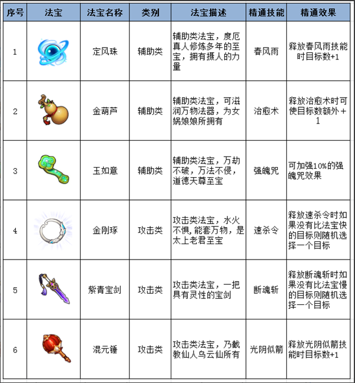
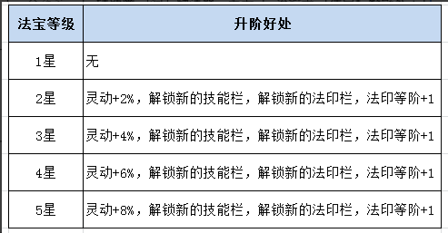
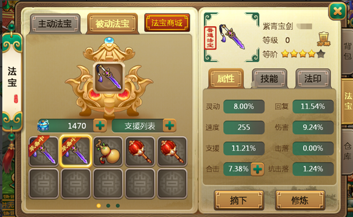
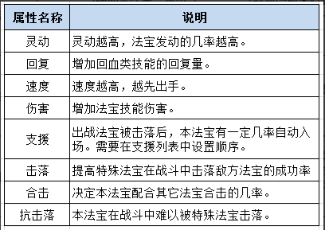
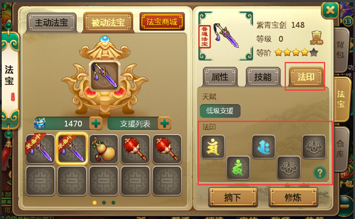
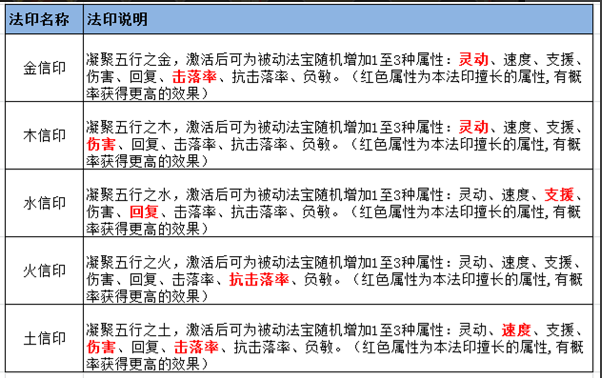
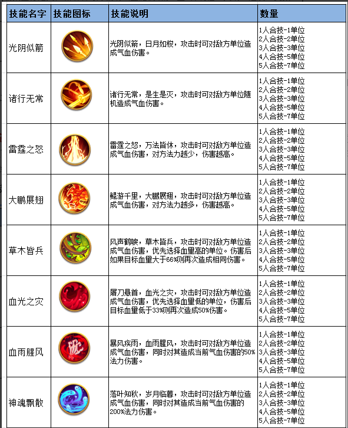
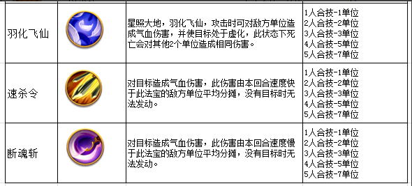
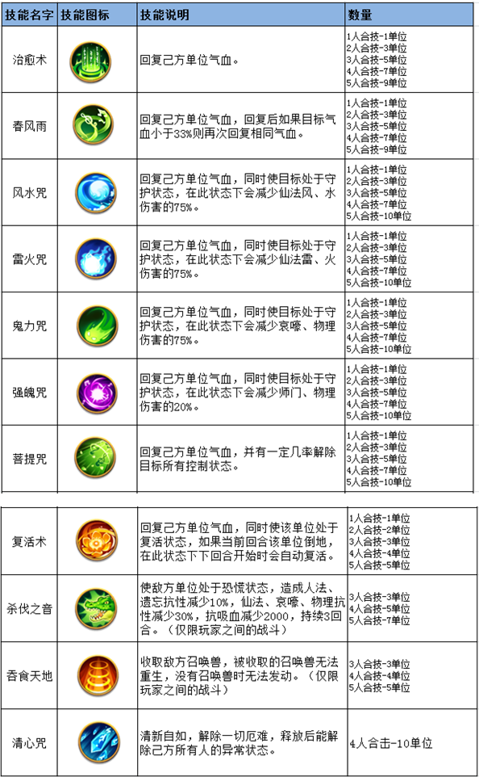
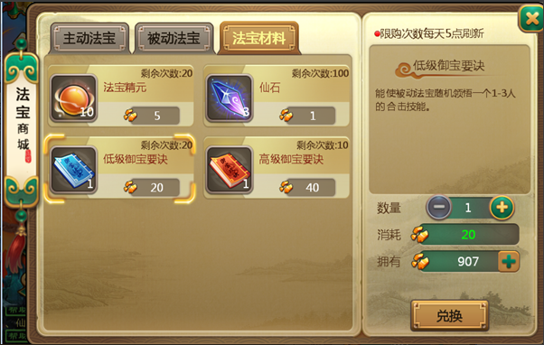

法宝与天赋，被动法宝介绍
法宝系统会在一转以后开启
点开背包即可查看。
天赋系统会在二转120级开启
获取够足够的天赋经验。每个种族角色拥有三条系别的天赋选择。根据个人爱好和喜欢去加点。就不多做介绍了
法宝种类：

目前被动法宝一共有六件，3件攻击类法宝，3件辅助类，大家可根据自己的需要，各取所需。
法宝等级：被动法宝一共200级，每提升一级，将会增加法宝的技能威力或者成功几率。升级法宝需要消耗一定的帮派成就点，每天前20次修炼，可获得双倍修炼点哦。（注意：每天前20次的双倍修炼是与主动法宝分开计算的）
法宝等阶：法宝一共有5个等阶（初始为1星），最高为5星。每升星一次，将会自动解锁一个等阶属性，等阶越高，所获得属性越多，如图：

如何提升法宝等阶：升阶与主动法宝一样，融合其它低等阶的被动法宝，当融合值满后，可自动升阶。
法宝属性：被动法宝一共有8种属性，详情如图：


法宝的属性将会影响法宝的威力，例如灵动，灵动越高，当前回合发动的几率越高。如何提高灵动或者其它属性呢，除了提升品阶外，激活法印，也是必要之举。
法印：被动法宝每提升一个等阶，即有资格开启一个法印栏。开启法印栏后，即可激活新的法印。每个法宝可同时激活5种不同的法印，每种法印都有不同的擅长属性。


法印一共有5个等阶，随法宝的等阶提升而增加。当法宝3阶时，法印等阶自动提升至3阶，此时法印将会开启炼化功能，通过炼化，法印可获得更多的极品属性，从而使法宝变得更强。
被动法宝技能：被动法宝技能栏共有5个，每个技能栏随法宝等阶提升而自动解锁，最多可领悟5个技能。法宝可以同时领悟多个合击目标相同，技能类型不同的合击技能。（在这里小编提醒大家：攻击类型法宝只能领悟攻击技能，辅助类法宝只能领悟辅助类技能。）
攻击型技能：


上为攻击技能，只能攻击类型法宝领悟。
辅助型技能：

以上为辅助技能，只能辅助类型法宝领悟。被动法宝的技能随合击人数而变化，合击人数越高，威力越大。
领悟书来源：法宝技能领书可以在法宝商城中通过法宝碎片进行兑换

精通技能：每个法宝天生都精通一种或多种技能，当被动法宝领悟到自己精通的技能后，战斗中释放该技能时，威力会加强。例如：定风珠精通出春风雨技能，当定风珠领悟到春风雨技能时，战斗中释放该技能后，回复的目标单位会额外+1。
法宝天赋：
根据法宝的类别（普通、中级、高级）可随机获得不同的天赋。
普通法宝随机获得1个低级天赋。
中级法宝随机获得低级、高级天赋各一个。
高级法宝拥有2个高级天赋。
天赋一旦生成后，将不能更改。关于天赋的说明，待被动法宝推出后，大家可在游戏内查看。
被动法宝发动规则：
1.被动法宝在战斗中根据自身灵动及合击属性，有一定概率发动合击。
2.合击时发动的技能只与主法宝技能及合击数量有关，与辅助法宝无关。
3.触发合击后，主法宝会产生“金色光芒”，辅助合击的法宝会产生“蓝色光芒”
4.泛着金色光芒的主法宝发动时若主人倒地，则无法释放技能。
5.泛着蓝色光芒的辅助合击法宝发动时若主人倒地，仍可继续与主法宝产生合击。
6.被动法宝每回合只会发动一次，若当前回合没有发动，则需要等到下回合。
7.若本回合有2个辅助法宝发动，则泛金光的主法宝最多能触发3人合击。
8.若本回合有4个辅助法宝响应，而泛金光的主法宝没有5人合击，只有2人合击，最终发动时，发动的为2人合击。